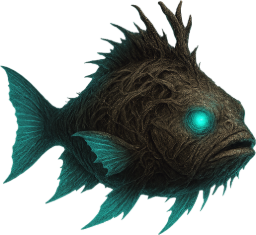
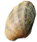

ВИД № 084Условия ловли
Глубина указана относительно глубины водоёма в точке заброса.
Ловится на спиннинг
Агрессивность
Базовая сила сопротивления: вес × 5. Разница уровней рыбы и снасти может увеличить нагрузку.
Коэффициент выбора
1 / 500 = 0,002
Это вес вида при выборе улова с учётом условий ловли, а не вероятность поклёвки в процентах.
Данные каталога
Снимок данных от 29.09.2026. Автоматического обновления нет. Для специальных находок могут действовать дополнительные условия снастей.
Вес и редкость
Порог следующей редкости завершает предыдущий диапазон. Трофей — вес строго больше 20 кг. 50 кг — опорный порог эпической редкости, а не максимальный возможный вес.
Леска для поклёвки
По толщине подходит любая леска.
Все модели в каталоге проходят ограничение по толщине. Прочность для вываживания подбирайте под вес и агрессивность рыбы.
Все модели лесок (19)
Для поклёвки нужны также подходящие удочка, наживка и условия ловли. Список проверяет только ограничение по толщине лески.
Магазинные
- Ёрш-04НизкаяНижний вес: 0 гНе отсекает мелкие экземпляры
- Окунь-11ОбычнаяНижний вес: 0 гНе отсекает мелкие экземпляры
- Лещ-25ОбычнаяНижний вес: 0 гНе отсекает мелкие экземпляры
- Карась-33НеобычнаяНижний вес: 0 гНе отсекает мелкие экземпляры
- Щука-56уНеобычнаяНижний вес: 500 гНе отсекает мелкие экземпляры
- Сазан-62РедкаяНижний вес: 1,5 кгНе отсекает мелкие экземпляры
- Налим-79РедкаяНижний вес: 2 кгНе отсекает мелкие экземпляры
- Кевлар-ЛайнЭпическаяНижний вес: 3 кгНе отсекает мелкие экземпляры
- ФантомЭпическаяНижний вес: 3,5 кгНе отсекает мелкие экземпляры
- УПЛ-24 БершЛегендарнаяНижний вес: 4 кгНе отсекает мелкие экземпляры
- Абсолют-30ЛегендарнаяНижний вес: 4,5 кгНе отсекает мелкие экземпляры
Самодельные
- Самодельная лескаНизкаяНижний вес: 0 гНе отсекает мелкие экземпляры
- Самодельная лескаОбычнаяНижний вес: 0 гНе отсекает мелкие экземпляры
- Самодельная лескаНеобычнаяНижний вес: 500 гНе отсекает мелкие экземпляры
- Самодельная лескаРедкаяНижний вес: 1,5 кгНе отсекает мелкие экземпляры
- Самодельная лескаЭпическаяНижний вес: 3 кгНе отсекает мелкие экземпляры
- Самодельная лескаЛегендарнаяНижний вес: 4 кгНе отсекает мелкие экземпляры
- Самодельная лескаМифическаяНижний вес: 5 кгНе отсекает мелкие экземпляры
- Самодельная лескаМироваяНижний вес: 6 кгНе отсекает мелкие экземпляры
Как определяется подходящая леска
Игра сравнивает нижний вес лески, делённый на 6, с максимальным обычным весом вида. Для этого вида: 20 кг × 6 = 120 кг. Это предел для первого числа в весовом диапазоне лески, а не требуемая прочность.
Слишком толстая леска исключает вид ещё до определения трофея. Улучшение «+» не меняет нижний порог. Если порог отсекает часть мелких экземпляров, это отмечено у модели.
Наживки
 Малек (живой)
Малек (живой) Кусочки рыбы
Кусочки рыбы
Моллюск Лягушка
Лягушка
Прикормки
 ПелетсПоклёвки: +50%
ПелетсПоклёвки: +50%
Водоёмы
В списках водоёмов клиента этот вид не указан. Постоянное место ловли по этим данным определить нельзя.
Исходные параметры
| key | warden-of-the-waters |
|---|---|
| minWeight | 2000 |
| maxWeight | 20000 |
| rarity | 1 |
| rarity-max | 500 |
| rareWeight | 50000 |
| price | 500 |
| depth | bottom |
| areal-grass | true |
| areal-stone | true |
| areal-sand | true |
| frameId | 81 |
| uid | 84 |
| agressiveRate | 500 |
| type | monster |
| tackleBait | true |
price — исходный параметр, а не итоговая цена продажи.